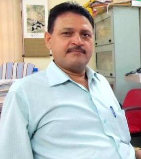

Dr. D. Tiwary

About Me
Will be updated soon...
Recent Publications
Some Selected publications:
- Sachin Mishra, Asha Lata Singh and Dhanesh Tiwary "Studies of Physico-chemical Status of the Ponds at Varanasi Holy City under Anthropogenic Influences" Int. J. Environ. Res.and Develop, 4(3) 261-268 (2014)
- S.P. Mishra, D. Tiwary: "Radiotracer technique in adsorption study Part-VIII .Adsorption of phosphate ions on alumina supported copper oxide Po." Radiochim. Acta. 56, 201-207 (1992).
- S.P. Mishra & D. Tiwary: "Radiotracer technique in adsorption study Part-VII .Efficient removal of Ba(II) from aqueous Solutions by hydrous manganese oxide." J. Radioanal. Nucl. Chem. Art 170, 138-141 (1993).
- S.P. Mishra & D. Tiwary: "Ion exchangers in Radioactive Waste Management Part- VII. Radiotracer Studies on Adsorption of Ba(II) and Sr(II) from Aqueous Solutions by Hydrous Thorium Oxide." J. Radioanal. Nucl. Chem. Art.196, 253-261 (1995).
- S.P. Mishra , D. Tiwary & M. C. R. Symons : "Modes of electron loss from Triphenyl phosphonium bromide : An Unusual Switch." Chem. Phys. Letts. 263, 476-480 (1996).
- S.P. Mishra & D. Tiwary: Efficient removal of cadmium from aqueous solutions by hydrous manganese oxide." Radiochim. Acta. 69, 213-217 (1998).
- M. C. R. Symons, S.P. Mishra & D. Tiwary: "The radical cation of trimethylamine-boron hydride: An EPR Study." Phys. Chem. Chem. Phys. 1, 111-112(1999).
- S.P. Mishra & D. Tiwary : "Ion exchangers in radioactive waste management Part- IX. Removal of barium and strontium ions from aqueous solutions by hydrous ferric oxide." Appl. Radiation isotopes .51, 359-366 (1999).
- RK Dey, A S Oliveira, T Patnaik, VK Singh, D Tiwary & C Airoldi; Grafting of organosilane derived from 3- glycidoxypropyltrimethoxysilane and thiourea on to magnesium phyllosilicate by sol-gel process and investigation of metal adsorption properties", J. Solid State Chemistry, 182, 2010-2017(2009)
- R B Rastogi , J L Maurya, V Jaiswal,& D Tiwary "Lanthanum dithiocarbamates as potential extreme pressure lubrication additives", International Journal of Industrial Chemistry 3(1):32-41(2012)
- R. B. Rastogo,JL Maaurya, V Jaiswal, & D Tiwary "Studies on Lanthanum Complexes of 1-Aryl-2,5-Dithiohydrazodicarbonamides in Paraffin Oil as Extreme Pressure Lubrication Additives", Journal of Tribology; 135:0445021-6.(2013)
- S. Awasthi, D. Tiwary & P.K. Mishra ,"Treatment of bio-digested distillery effluents with the help of emulsified liquid membrane permeation," Int. J. of Applied Engineering Research, 9(3), 149-154 (1994)
SELECTED RESEARCH PAPERS PRESENTED AT VARIOUS SCIENTIFIC MEETINGS
- S.P. Mishra& D. Tiwary: "Radiotracer Technique in Adsorption Study Part- A case of Efficient Removal of Sr(II) from Aqueous Solutions by MnO2 Powder." Proc. Intern. Symp. Radiochem. Radiation Chem.,B.A.R.C. Mumbai, Paper no. RC-44,Awarded Cash/Merit Certificate, Feb 4-7(1991).
- S.P. Mishra& D. Tiwary: "Efficient Removal of Sr(II) from Aqueous Solutions by Hydrous Manganese Oxide- A Radiotracer Study" 3rdAnnual Conf. of Purvanchal Academy of Sciences,T. D. College,Jaunpur, Dec. 9-10 (1991).
- S.P. Mishra & D. Tiwary : "Inorganic Ion exchangers in Radioactive Waste Management- Adsorption of Sr(II) on Hydrous Thorium Oxide" Proc. Nuclear & Radiation Chem.(DAE) Symposium, Andhra University,Waltair, Awarded Cash/Merit Certificate, pp 319, Dec. 21-2 4(1992).
- S.P. Mishra & D. Tiwary : "Ion exchangers in Radioactive Waste Management Part- XII. Removal of Barium and Strontium Ions from Aqueous Solutions by Hydrous Ferric Oxide." 13th Radiochemical Conference, Marianske Lazne- Jachymov, Czech Republic, April 19-24(1998).
- S.P. Mishra, D. Tiwary M.C.R. Symons(Late) &M.T. Wilson: "Electron Addition to Peroxynitrite Ions in Solution: Formation of Nitrogen Dioxide and Nitrate Dianoins", Proc. Of TrombaySymp. on Radiation & Photochem., B.A.R.C., Mumbai, Paper No.RC-23(2006).
Academic Profile
-
Academic Profile
- Ph.D. Banaras Hindu University [1992]
- M.Sc.: Banaras Hindu University [1988]
-
Professional Profile
- Associate Professor: Institute of Technology, BHU [2007 - till date]
- Reader: Institute of Technology, BHU [2004 - 2007]
- Reader: BIT, Mesra, Ranchi [2003]
- Lecturer: BIT, Mesra, Ranchi [1999]
Research Interests
- Isotopic Applications in Removal processes, Tribology, Ion-exchange Development of organo-funtionalised mesoporous silica as adsorbent, synthesis and application of nano-composite material
Awards and Honours
- Cash/Merit certificates awarded for best paper presentation at: Int. Symp. on Radiochem. &Radiation Chem., BARC, Mumbai, Paper No. RC-44(1991) &
DAE Symp. on Nuclear and Radiation Chemistry, Andhra University, Waltair(1992)
- Life member: Indian Association of Nuclear Chemists &Allied Scientists (IANCAS), BARC, Mumbai; Indian Society for Technical Education (ISTE), New Delhi, Indian Society of Analytical Scientists, Varanasi Chapter.
Contact Me
- dtiwari.apc@iitbhu.ac.in
- 9415992174
- Department of Chemistry Indian Institute of Technology (Banaras Hindu University) Varanasi - 221 005